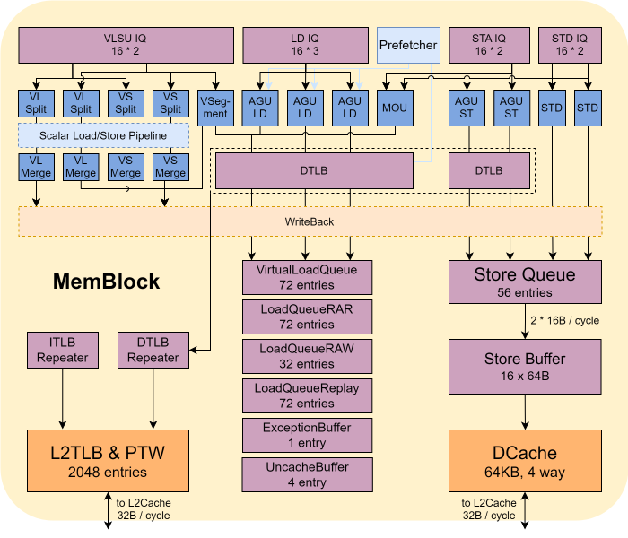

メモリパイプライン LSU
サブモジュールリスト
| サブモジュール | 説明 |
|---|---|
| LoadUnit | Load命令実行ユニット |
| StoreUnit | Storeアドレス実行ユニット |
| StdExeUnit | Storeデータ実行ユニット |
| AtomicsUnit | アトミック命令実行ユニット |
| VLSU | ベクトルメモリアクセス |
| LSQ | メモリアクセスキュー |
| Uncache | Uncache処理ユニット |
| SBuffer | Storeコミットバッファ |
| LoadMisalignBuffer | Load非アラインバッファ |
| StoreMisalignBuffer | Store非アラインバッファ |
設計仕様
命令セット仕様
- RVI命令セットのLoad/Store命令の実行と書き戻しをサポート
- RVAアトミック命令拡張をサポート
- RVH仮想化拡張をサポート
- RVVベクトル拡張をサポート
- Cacheableアドレス空間のLoad/Store/Atomicアクセスをサポート
- MMIOおよびUncacheアドレス空間のLoad/Storeアクセスをサポート（ベクトルメモリアクセス命令と非アラインメモリアクセス命令を除く）
- ZicbomおよびZicbozなどのキャッシュ操作命令、Zicbopソフトウェアプリフェッチ命令をサポート
- 非アラインメモリアクセス（Zicclsm）をサポートし、16Bアライン範囲内の非アラインメモリアクセスのアトミック性を保証（Zama16b）
- Sv39およびSv48ページングメカニズムをサポート
- 連続ページアドレス変換（Svnapot）をサポート
- ページベースのメモリ属性（Svpbmt）をサポート
- ポインタマスキング（Supm、Ssnpm、Sspm）をサポート
- Compare-and-Swapアトミック命令（Zacas）をサポート
- RVWMOメモリ一貫性モデルをサポート
- カスタム故障注入命令をサポート
マイクロアーキテクチャ特性
- CacheableおよびUncache（非MMIO）アドレス空間のアクセスを含む、Load/Store命令の順不同スケジューリングをサポート
- スカラーパイプラインベースのベクトルメモリアクセスの順不同スケジューリングをサポート
- ユニットストライド（Unit-stride）ベクトルメモリアクセスの要素マージアクセスをサポート
- アドレスとデータを分離したStore命令の発行と実行をサポート
- LoadQueueベースのLoad命令再発行メカニズムをサポート
- アトミック命令の非投機的実行をサポート
- SBufferによるStore命令のパフォーマンス最適化をサポート
- StoreQueueおよびSBufferベースのデータフォワーディングメカニズムをサポート
- RAR/RAWメモリアクセス違反の検出と回復をサポート
- MESIキャッシュ一貫性プロトコルをサポート
- TileLinkバスベースのマルチレベルキャッシュアクセスをサポート
- DCache SECDEDチェックをサポート
- ソフトウェアで設定可能なStream、Stride、SMSなどのハードウェアプリフェッチャをサポート
パラメータ設定
| パラメータ | 設定 |
|---|---|
| VAddr Bits | (Sv39) 39, (Sv48) 48 |
| GPAddr Bits | (Sv39x4) 41, (Sv48x4) 50 |
| LoadUnit | 3 x 8B/16B |
| StoreUnit | 2 x 8B/16B |
| StoreExeUnit | 2 |
| LoadQueue | 72 |
| LoadQueueRAR | 72 |
| LoadQueueRAW | 32 |
| LoadQueueReplay | 72 |
| LoadUncacheBuffer | 4 |
| StoreQueue | 56 |
| StoreBuffer | 16 x 64B |
| VLMergeBuffer | 16 |
| VSMergeBuffer | 16 |
| VSegmentBuffer | 8 |
| VFOFBuffer | 1 |
| Load TLB | 48-entry fully associative |
| Store TLB | 48-entry fully associative |
| L1 Prefetch TLB | 48-entry fully associative |
| L2 Prefetch TLB | 48-entry fully associative |
| DCache | 64KB 4-way set associative |
| DCache MSHR | 16 |
| DCache Probe Queue | 8 |
| DCache Way Predictor | Off |
機能説明
メモリパイプラインは、発行キューからメモリアクセス命令（メモリ、MMIO、Uncacheアドレス空間のLoad/Store命令、メモリアドレス空間のアトミック命令を含む）を受け取り、メモリアクセス命令のタイプに応じてメモリアクセス操作を完了し、命令の実行結果を取得し、結果をレジスタファイルに書き戻し、同時にフォワーディングバイパスネットワークに通知し、後続の命令をウェイクアップしてデータフォワーディングを行います。
メモリアクセス命令のディスパッチ
LoadおよびStore命令には、順序付け、フォワーディング、違反など、複雑な制御メカニズムがあるため、LoadとStore命令を保存し、FIFOの順序を保証し、関連する制御を行うためのキューが必要です。このキューがLoadQueueとStoreQueueです。命令がデコードとリネームなどの操作を完了した後、Load/Store命令はROBとLSQにディスパッチされ、対応するrobIdx、lqIdx、sqIdxが割り当てられ、その後、対応する発行キューに入り、ソースオペランドがすべて準備完了になるのを待ってからMemBlockのパイプラインに発行されます。Load/Store命令は、MemBlockでの実行のライフサイクル全体でlqIdxとsqIdxを携帯し、メモリアクセス違反の検出やデータフォワーディング時に命令の順序付けに使用されます。
スカラーメモリアクセス命令の場合、1つの命令に1つのLoadQueueまたはStoreQueueエントリが割り当てられます。
ベクトルメモリアクセス命令の場合、1つの命令はデコード段階でいくつかのuopに分割され、各uopにはいくつかの要素が含まれ、各要素は1回のメモリアクセス操作に相当します。ディスパッチ段階では、1つのuopにいくつかのLSQエントリが割り当てられ、割り当てられるエントリ数は1つのuopに含まれる要素の数に等しくなります。
メモリアクセス命令の実行
メモリアクセスユニットには、3つのLoadパイプライン、2つのStoreアドレスパイプライン、2つのStoreデータパイプラインが含まれています。各パイプラインは、対応する発行キューから発行された命令を独立して受け取り、実行します。
Loadパイプラインは4ステージのパイプライン構造です。
- s0：メモリアクセスアドレスを計算し、さまざまなソース（非アラインLoad、Loadリプレイ、MMIO、プリフェッチ、スカラーLoad、ベクトルLoadなど）からの要求を調停し、TLBにアクセスし、DCacheディレクトリにアクセスし、書き戻しウェイクアップ信号を送信します。
- s1：TLBアドレス変換の応答を受け取り、DCache読み取りディレクトリの結果を受け取ってウェイを選択し、DCacheデータSRAMにアクセスします。StoreUnit s1のストア命令とRAW違反を検出します。StoreQueue / LoadQueueUncache / SBuffer / DCache MSHRを問い合わせてデータフォワーディングを行います。
- s2：LoadQueueRARとLoadQueueRAWを問い合わせて、後続のLoad/Store命令の違反チェックに備えます。DCacheミスの場合、s2でMSHRを割り当てる必要があります。StoreUnit s1のストア命令とRAW違反を検出します。
- s3：書き戻し。書き戻しがない場合は、ウェイクアップをキャンセルする必要があります。メモリアクセス違反が発生した場合は、パイプラインをフラッシュします。再発行が必要な場合は、LoadQueueReplayに入ります。
Storeアドレスパイプラインは4ステージのパイプライン構造です。
- s0：メモリアクセスアドレスを計算し、さまざまなソース（非アラインStore、スカラーStore、ベクトルStoreなど）からの要求を調停し、TLBにアクセスします。
- s1：TLBアドレス変換の応答を受け取ります。LoadUnit s1およびs2のロード命令とRAW違反を検出します。LoadQueueRAWを問い合わせて違反チェックを行います。
- s2：StoreQueueでアドレス準備完了としてマークします。
- s3：書き戻し。
Storeデータパイプラインは、発行キューからデータを受け取った後、データをStoreQueueに書き戻し、データ準備完了としてマークします。
ベクトルメモリアクセス命令の実行
Segment以外のベクトルメモリアクセス命令の場合、VLSplitとVSSplitはベクトルメモリアクセス発行キューから発行されたuopを受け取り、uopをいくつかの要素に分割します。VLSplitとVSSplitはこれらの要素をLoadUnit/StoreUnitに発行して実行させ、実行フローはスカラーメモリアクセスと同じです。要素の実行が完了すると、VLMerge/VSMergeに書き戻され、Mergeモジュールは要素の収集、uopへの結合、ベクトルレジスタファイルへの書き戻しを担当します。
Segment命令は、独立したVSegmentUnitモジュールによって処理されます。
Load命令の再発行
Load命令は発行キューでの再発行をサポートしていないため、Load命令が以下の特殊な状況に遭遇した場合、LoadQueueReplayに入って再実行を待つ必要があります。
- C_MA：メモリアクセス違反予測アルゴリズム（MDP）が、Loadが古いStoreとアドレス依存関係があり、そのStoreのアドレスがまだ準備できていないと判断した場合。
- C_TM：TLBミス。
- C_FF：Loadが古いStoreとアドレス依存関係があるが、そのStoreのデータがまだ準備できていない場合。
- C_DR：DCacheミスでMSHRが満杯、または同じアドレスのMSHRが新しいLoadを一時的に受け入れられない場合。
- C_DM：DCacheミスで、現在のLoadがMSHRに正常に受け入れられた場合。
- C_WF：ウェイ予測器の予測が失敗した場合（ウェイ予測器はデフォルトでオフ）。
- C_BC：DCacheアクセスでバンクコンフリクトが発生した場合。
- C_RAR：LoadQueueRARが満杯の場合。
- C_RAW：LoadQueueRAWが満杯の場合。
- C_NK：StoreUnitのStore命令とメモリアクセス違反が発生した場合。
- C_MF：LoadMisalignBufferが満杯の場合。
LoadQueueReplayは、再発行の理由に応じて、上記の優先順位の高いものから順に再発行します。
Store命令の再発行
Store命令は発行キューが再発行を担当します。Store命令が発行キューから発行された後、発行キューはこのStore命令をすぐにはクリアせず、StoreUnitからのフィードバックを待ちます。StoreUnitはTLBがヒットしたかどうかに応じて、発行キューに対応するフィードバックを送信します。TLBミスの場合、発行キューが命令の再発行を担当します。
RARメモリアクセス違反の検出と回復
RARメモリアクセス違反：RVWMOモデルによると、(1) 同じアドレス（アドレスが重複する場合を含む）の2つの読み取り操作の間に同じアドレスの書き込み操作が挿入され、かつ (2) これら2つの読み取り操作が返す結果が異なる書き込み操作からのものである場合、これら2つの読み取り操作はプログラム順序と一致する必要があります。シングルコアのシナリオでは、メモリアクセスユニットはLoad命令を順不同で実行しますが、データフォワーディングメカニズムを通じて、同じアドレスの2つのLoadの実行結果がプログラム順序を保証するようにします。しかし、マルチコアのシナリオでは、順序が乱れた同じアドレスの2つのLoadの間に別のコアの書き込み操作（書き込み命令ではなく書き込み操作）が挿入されると、古い方のLoadが書き込み操作後の更新された値を読み取り、若い方のLoadが書き込み操作前の古い値を読み取ることになり、RARメモIAクセス違反となります。
RARメモリアクセス違反の検出：LoadQueueのLoadQueueRARモジュールは、FreeList構造を使用して、同じアドレスを持つ可能性があり、まだ実行されていない古いLoadのすべてのLoad命令を記録します。Load命令がLoadUnitでs2ステージ（この時点でアドレス変換とPMA/PMPチェックが完了）まで実行されると、LoadQueueRARエントリが割り当てられます。LoadQueueRARのLoad命令がプログラム順序で古いLoadがすべて書き戻された場合、このLoad命令はLoadQueueRARから解放されます。Load命令がLoadQueueRARにアクセスしたときに、より若く、同じアドレスのLoadがあり、その若いLoadが別のコアからアクセスされた可能性がある場合（そのアドレスが置き換えられたか、Probeされた場合）、RARメモリアクセス違反が発生し、ロールバックが必要です。
RARメモリアクセス違反の回復：RAR違反が検出されると、LoadUnitはロールバックを開始し、違反が発生した古いLoadの次の命令からパイプラインをフラッシュします。
RAWメモリアクセス違反の検出と回復
RAWメモリアクセス違反：プロセッサコアが実行するLoad命令の結果は、現在のプロセッサコアが見るグローバルメモリ順序の最新の書き込み操作から来るべきです。特に、最新の書き込み操作が現在のコアのStore命令からのものである場合、LoadはそのStoreが書き込んだデータを取得する必要があります。スーパースカラー順不同プロセッサは、Load命令のパフォーマンスを最適化するためにLoadを投機的に実行するため、Load命令が古い同じアドレスのStoreを追い越して先に実行され、Store前の古い値を取得することがあり、これがRAWメモリアクセス違反です。
RAWメモリアクセス違反の検出：LoadQueueのLoadQueueRAWモジュールは、FreeList構造を使用して、同じアドレスを持つ可能性があり、まだ実行されていない古いStoreのすべてのLoad命令を記録します。Load命令がLoadUnitでs2ステージ（この時点でアドレス変換とPMA/PMPチェックが完了）まで実行されると、LoadQueueRAWエントリが割り当てられます。StoreQueueのすべてのStoreアドレスが準備完了になると、LoadQueueRAWのすべてのLoadが解放されます。または、LoadQueueRAWの命令がプログラム順序で古いStoreのすべてのアドレスが準備完了になると、このLoadはLoadQueueRAWから解放されます。Store命令がLoadQueueRAWを問い合わせたときに、より若く、同じアドレスのLoadがある場合、RAWメモIAクセス違反が発生し、ロールバックが必要です。
RAWメモリアクセス違反の回復：RAW違反が検出されると、LoadQueueRAWはロールバックを開始し、違反が発生したStoreの次の命令からパイプラインをフラッシュします。
SBufferによるStore命令のパフォーマンス最適化
RVWMOモデルによると、マルチコアのシナリオでは、（FENCEやその他のバリアセマンティクスを持つ命令がない限り）あるコアのStore命令は、若い異なるアドレスのLoad命令よりも遅れて他のコアに見えることがあります。このメモリモデルのルールは、主にStore命令のパフォーマンスを最適化するためです。RVWMOを含む弱い一貫性モデルでは、プロセッサコアにSBufferを追加することが許可されており、コミットされたStore命令の書き込み操作を一時的に保存し、これらの書き込み操作をマージしてからDCacheに書き込むことで、Store命令によるDCache SRAMポートの競合を減らし、Load命令の実行帯域幅を向上させます。
SBufferは16×512Bの全相聯構造です。複数のStoreアドレスが同じキャッシュブロックに収まる場合、SBufferはこれらのStoreをマージします。
SBufferは1サイクルに最大2つのStore命令を書き込むことができ、各Store命令の書き込みデータ幅は16Bです（特殊なケースとして、cbo.zero命令は一度に1つのキャッシュブロックを操作します）。
SBufferの書き出し：
- SBufferの容量が一定のしきい値を超えると書き出し操作が実行され、PLRU置換アルゴリズムに従って置換ブロックが選択され、DCacheに書き込まれます。
- SBufferはパッシブフラッシュメカニズムをサポートしており、FENCE/アトミック/ベクトルSegmentなどの命令が実行されるとSBufferがクリアされます。
- SBufferはタイムアウトフラッシュメカニズムをサポートしており、データブロックが\(2^{20}\)サイクル以上置換されない場合に書き出されます。
Store-to-Loadデータフォワーディング
SBufferの存在とLoad命令の投機的実行により、Load命令はDCacheに加えてSBufferとStoreQueueにもアクセスする必要があります。そのため、SBufferとStoreQueueはStore-to-Loadデータフォワーディング機能を提供する必要があります。複数のソースが同時にヒットした場合、LoadUnitは複数のソースからのデータをマージする必要があり、マージの優先順位はStoreQueue > SBuffer > DCacheです。
MMIO命令の実行
XiangShanコアは、スカラーメモリアクセス命令のみがMMIOアドレス空間にアクセスすることを許可しています。MMIOアクセスは他のどのメモリアクセス操作とも強く順序付けられている（Strongly-ordered）ため、MMIO命令はRoBの先頭になるまで実行を待つ必要があります。つまり、この命令より前の命令がすべて完了している必要があります。MMIO Load命令の場合、仮想アドレスから物理アドレスへの変換が完了し、PMA/PMP物理アドレスチェックがパスしている必要があります。MMIO Store命令の場合、仮想アドレスから物理アドレスへの変換が完了し、物理アドレスチェックがパスし、書き込みデータが準備完了している必要があります。その後、LSQがメモリアクセス要求をUncacheモジュールに送信し、Uncacheモジュールがバスを介してペリフェラルにアクセスし、結果を取得した後、LSQがRoBに書き戻します。
アトミック命令、ベクトル命令はMMIOアクセスをサポートしておらず、MMIOアドレス空間にアクセスするこれらの命令は、対応するAccessFault例外を報告します。
Uncache命令の実行
XiangShanコアは、非べき等で強く順序付けられたMMIOアドレス空間へのアクセスに加えて、べき等で弱い一貫性（RVWMO）を持つNon-cacheableアドレス空間へのアクセスもサポートしています。後者はNCと略され、ソフトウェアはページテーブルのPBMTビットフィールドをNCに設定することで、元のPMA属性を上書きします。MMIOアクセスとは異なり、NCアクセスは順不同メモリアクセスを許可し、NC Loadの実行には副作用がないため、投機的に実行できます。
LoadUnit/StoreUnitパイプライン上でNCアドレス（PBMT = NC）と見なされるメモリアクセス命令は、LSQでマークされます。LSQはNCメモリアクセスをUncacheモジュールに送信します。Uncacheは複数のNC要求を同時に処理し、要求のマージをサポートし、StoreからLoadUnitで実行中のNC Loadへのフォワーディングを担当します。
アトミック命令、ベクトル命令はNCアクセスをサポートしておらず、NCアドレス空間にアクセスするこれらの命令は、対応するAccessFault例外を報告します。
非アラインメモリアクセス
XiangShanコアは、スカラーおよびベクトルメモリアクセス命令によるメモリ空間への非アラインアクセスをサポートしています。
- 16B境界をまたがないスカラー非アラインメモリアクセスは、追加の処理なしで正常にアクセスできます。
- 16B境界をまたぐスカラー非アラインメモリアクセスは、MisalignBufferで2回のアラインされたメモリアクセス操作に分割され、完了後、MisalignBufferが結合と書き戻しを担当します。
- ベクトル非SegmentのUnit-stride命令は、連続したアドレス空間にアクセスし、要素のマージ後に連続した16Bを一度にアクセスするため、追加の処理は不要です。
- ベクトル非SegmentのUnit-stride以外の命令は、VSplitモジュールで要素の分割とアドレス計算が完了し、パイプラインに送られます。非アラインの要素はMisalignBufferに送られ、残りのフローは非アラインスカラーと同じですが、最終的にMisalignBufferはVMergeに書き戻され、直接バックエンドには書き戻されません。
- ベクトルSegment命令の非アライン処理は、VSegmentUnitが独立して完了し、スカラーメモリアクセスパスを再利用せず、独立したステートマシンで完了します。
アトミック命令は非アラインアクセスをサポートしておらず、MMIOおよびNCアドレス空間は非アラインアクセスをサポートしていません。これらの場合、AccessFault例外が報告されます。
アトミック命令の実行
XiangShanコアはRVAおよびZacas命令セットをサポートしています。XiangShanの現在の設計では、アトミック命令がアクセスするキャッシュブロックをDCacheにキャッシュしてからアトミック操作を実行します。
メモリアクセスユニットは、Store発行キューが発行するアドレスとデータを監視し、アトミック命令であればAtomicsUnitに入ります。AtomicsUnitは、TLBアドレス変換、SBufferのクリア、DCacheへのアクセスなど一連の操作を完了します。
全体設計
全体ブロック図とパイプライン
